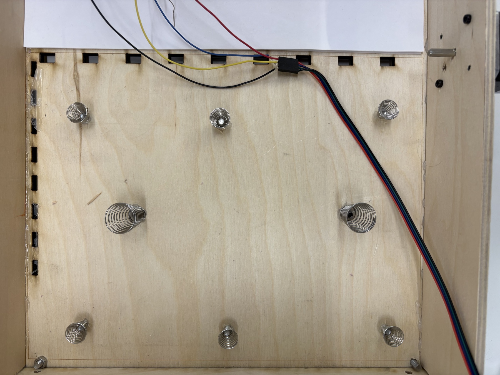
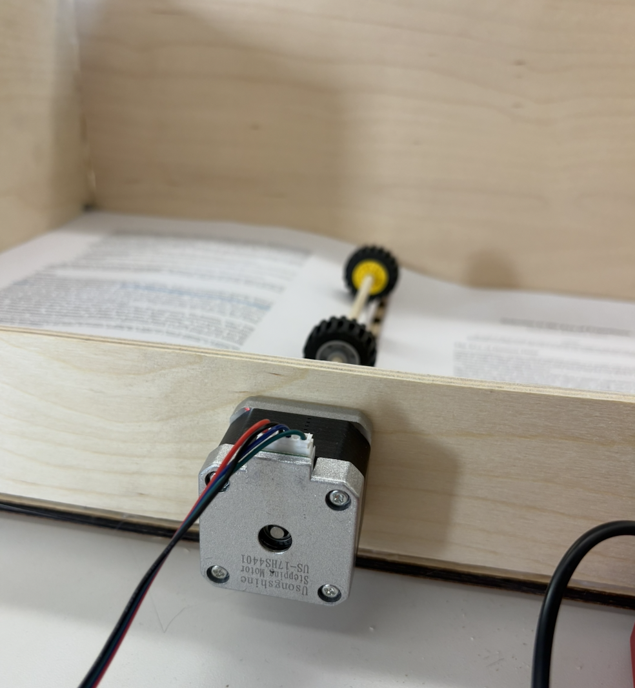

This week I focused on actually getting my project to work. It was decently fun, and had a lot of issues.
First, I had to figure out a way to keep the stack of papers at the same height at all times, OR to keep the motor relative to the stack stable. I was going to do a rack and pinion mechanism, but I ended up doing something much simpler: springs!
I put around 8 springs on the base of the scanning station and screwed them in place, with a bit of hot glue as well. This ended up working decently well!


Then I had to fix my motor problem. As you know from the project demo, I had a yellow motor that was not precise at all — so I switched to a NEMA 17 stepper motor.